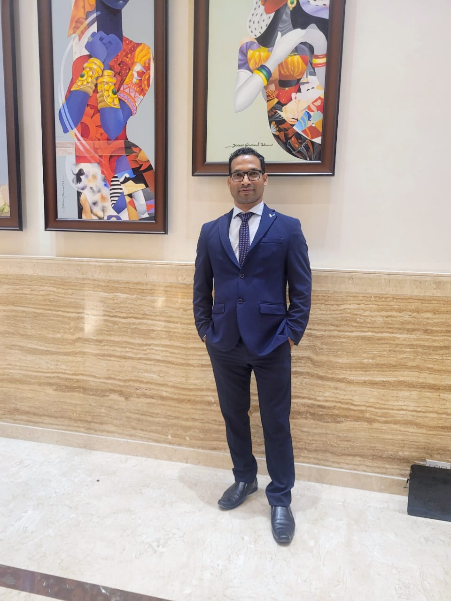
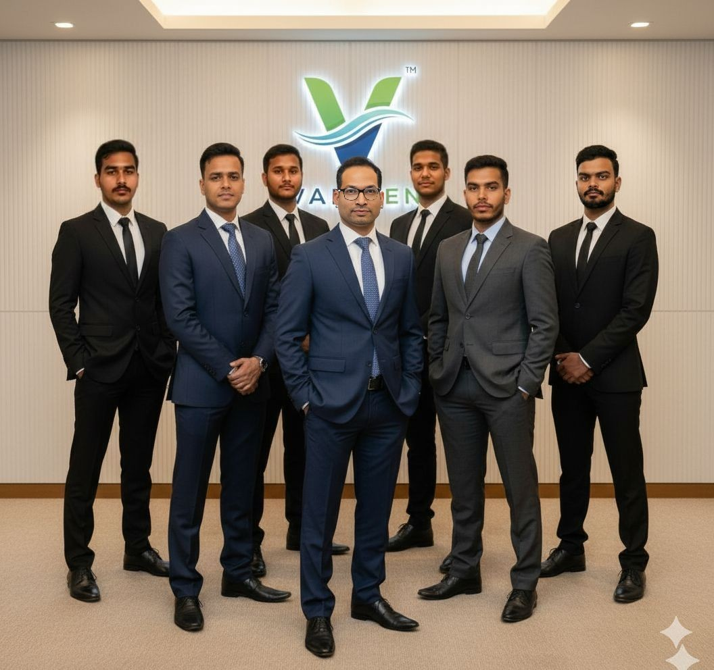

We combine two decades of heavy engineering expertise with cutting-edge IoT to solve India’s water crisis.

For over 20 years, I stood on the frontlines of India’s water infrastructure. I have designed treatment plants, laid kilometers of pipelines, and commissioned industrial systems across Eastern India.
But I noticed a recurring failure. No matter how good the pump or how expensive the filter, systems failed due to human error and lack of visibility. Tanks overflowed, motors burned out, and compliance logs were faked.
I realized that more hardware wasn't the solution. Intelligence was.
That is why I founded Varizen Technologies. We are pivoting from being a traditional EPC contractor to a Deep-Tech Water Utility company. We don't just build the infrastructure; we give it a brain.
The intersection of real-world physics and digital intelligence.
Most IoT startups are run by coders who have never held a wrench. We understand hydraulic pressure, pump curves, and fluid dynamics. We build software that respects the physics of water.
Technology fails without service. Unlike big brands that sell-and-forget, Varizen operates a hyper-local service network. If the App alerts a leak, our team is there to fix it.
Our technology isn’t imported. It is engineered in Odisha for Indian conditions—handling voltage fluctuations, hard water, and extreme weather.
Our mission is to automate 10,000 households and 100 industries by 2027, creating a "Virtual Dam" of saved water.
